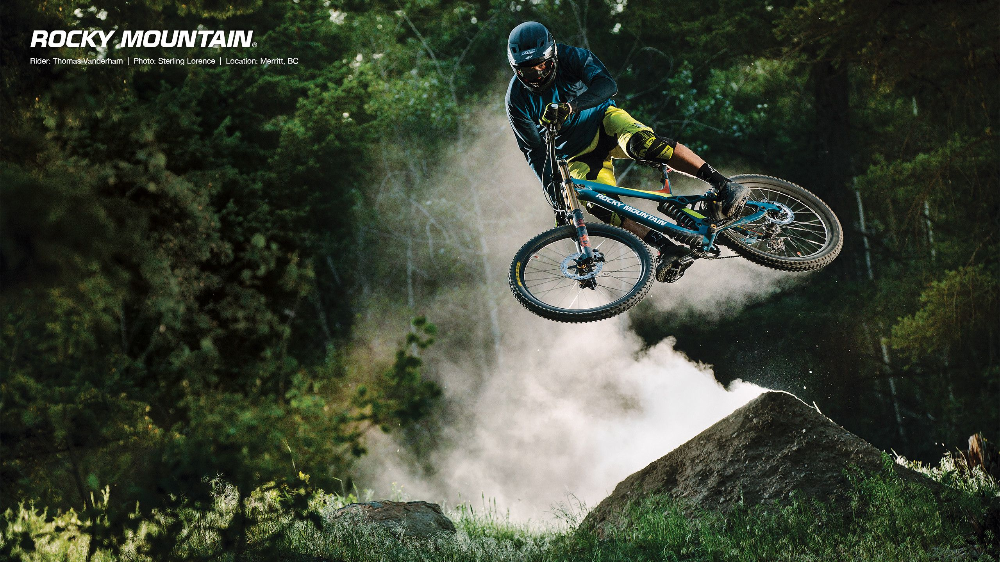
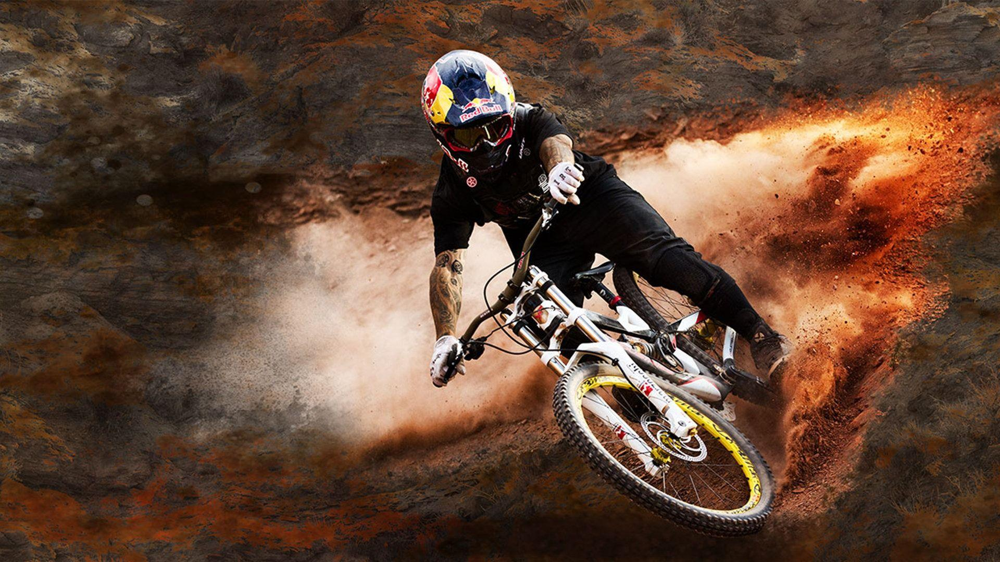

1. ჩარჩო, საყრდენი მილის და სადა.
2. ბორბლები.
მათ შორის ბორბლის ღერძი, ფოლადის მავთულები, რგოლი, შიდა მილი და გარე მილები.
3. გადამცემი ნაწილი.
ის ნაწილი, რომელიც ადამიანის ენერგიას მექანიკურ ძალად აქცევს, მათ შორისაა პედლები,
ამწეები, ჯაჭვის დისკები, ჯაჭვები, ფრჩხილები, ღერძი და უკანა ბორბლები.
4. სამუხრუჭე ნაწილი
ანუ სამუხრუჭე აპარატურა, რომელიც საშუალებას აძლევს მთის ველოსიპედს შეანელონ და ეფექტურად შეაჩერონ ნაწილების ერთობლიობა,
მათ შორის სახელური, მავთულები და სამუხრუჭე კალიფსი.
ანუ სამუხრუჭე აპარატურა, რომელიც საშუალებას აძლევს მთის ველოსიპედს შეანელონ და ეფექტურად შეაჩერონ ნაწილების ერთობლიობა,
მათ შორის სახელური, მავთულები და სამუხრუჭე კალიფსი.
5. სახელმძღვანელო ნაწილი
ის ნაწილი, რომელიც საშუალებას აძლევს მთის ველოსიპედს თავისუფლად მიბრუნდეს,
მათ შორის წინა, წიწიბურა, თავსაბურავი, წინა ჩანგალი და წინა საჭე.
 